Каталог
Дванадцять фракталів у повній роздільній здатності 1920 × 1080 — під екран Full HD; мініатюри — 480 × 270. Наведіть курсор на мініатюру — лупа покаже деталі оригіналу (Alt + коліщатко змінює збільшення). Клацніть, щоб відкрити.
|
01Мандельброт і родичі 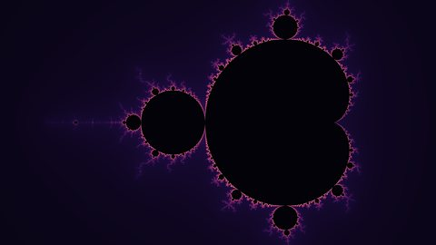 |
02Мандельброт і родичі |
03Мандельброт і родичі 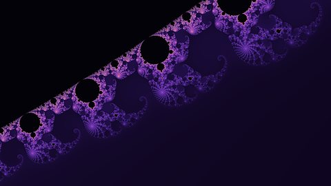 |
04Множини Жюліа 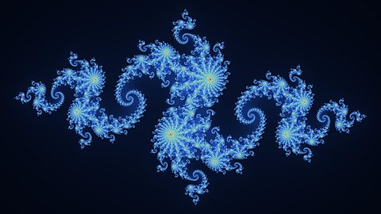 |
|
05Множини Жюліа 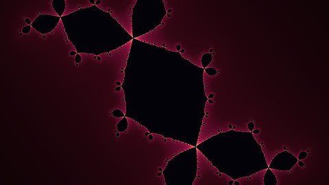 |
06Мандельброт і родичі 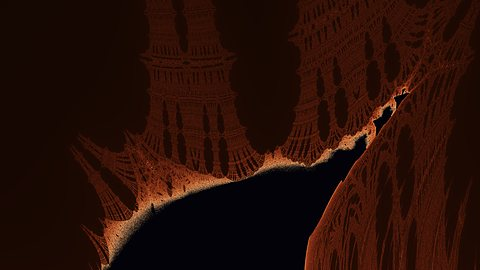 |
07Геометрія 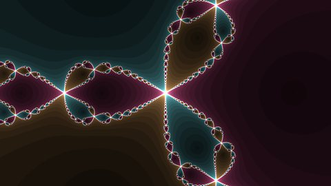 |
08Геометрія 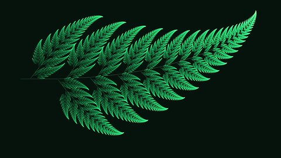 |
|
09Хаос 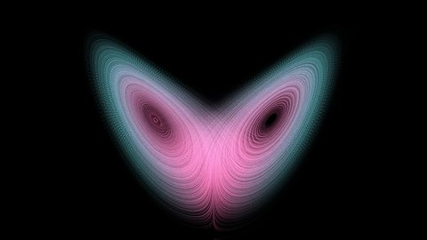 |
10Хаос 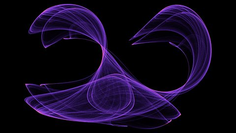 |
11Хаос 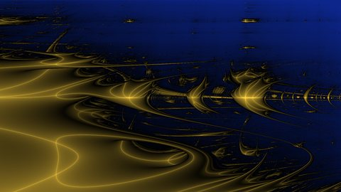 |
12Геометрія 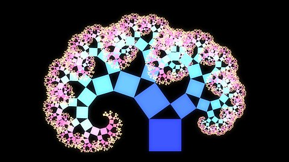 |